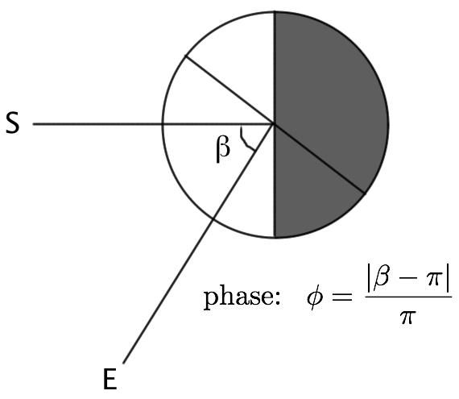
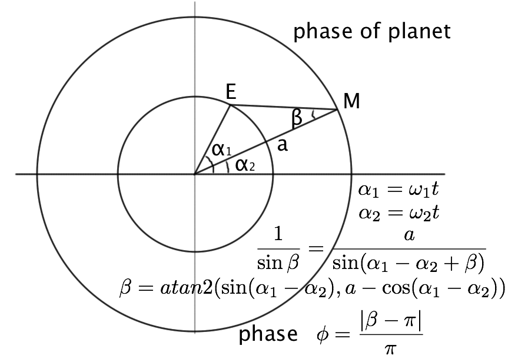
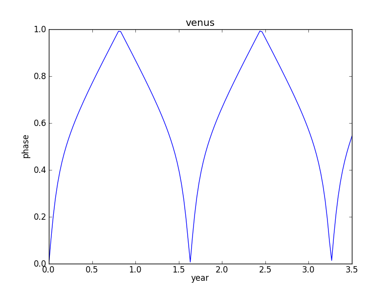
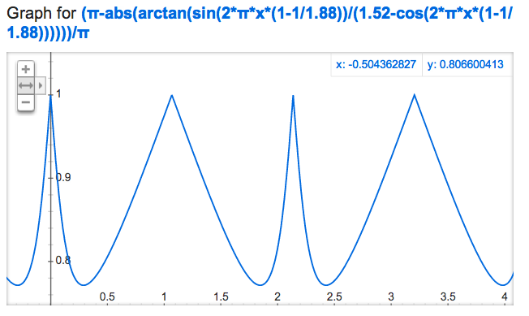
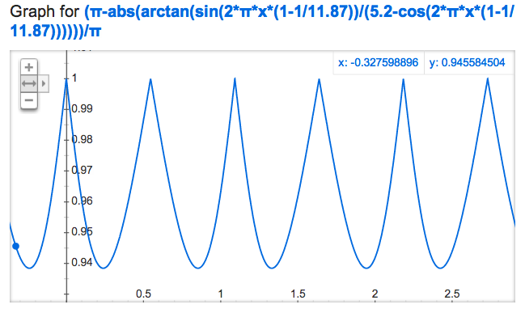

行星的相位
月有阴晴圆缺是说的从地球上看月球有相位的变化。那么行星有相位变化吗? 有，只不过从地球上看行星只能看到光点，无法辨别它的圆缺，它的相位对其亮度是有影响的。
相(phase)一般定义为可见区域中的日照部分占总日照区域(对球形天体日照区域为一半)的比例，如果能看见全部的光照区域，相为1, 如果看见的区域全部为黑夜，则相为0。根据这个定义，以火星为例，相与日－火连线和地－火连线的夹角有关，见下图。

相的计算
假设行星轨道为理想圆，所有行星轨道都在同一个平面上，则从地球上看行星的相变化的计算见下图:

行星的相计算
可以看出，当地球外侧行星与地球相冲时相位最大，相合时也最大，但此时无法直接观测。地球内侧行星与地球相冲时相位最小，相合时相位最大。
google search graph 没有提供arctan2/atan2 函数，因此不能用它来画金星相位变化曲线。下面是用 Python+matplotlib 画的金星的相位变化曲线:
import numpy as np
from math import pi
import matplotlib.pyplot as plt
t=np.linspace(0,5,200)
plt.plot(t,(pi-abs(np.arctan2(np.sin(2*pi*t*(1-1/0.62)),(0.72-np.cos(2*pi*t*(1-1/0.62))))))/pi)
plt.axis([0, 3.5, 0, 1])
plt.xlabel('year')
plt.ylabel('phase')
plt.title('venus')
pic='img/venus_phase.png'
plt.savefig(pic)
print '[[./%s]]'%pic

金星的相位变化
对于地球外侧行星，其相位角beta不会大于pi/2, 因此可以用google search graph 来绘制相位变化曲线。
火星的相位变化见下图。最大相位为1，发生在冲、合时。其中较尖锐的锋为冲，较钝的锋为合。最小相约为0.77。其波动周期就取决于地球与火星的合会周期。

火星的相位变化
木星的相变化为:

木星的相位变化
可见其相位都很大，最小值为0.94. 变化周期约为1年。
对于更远的行星，土星, 天王星, 海王星，其相位变化范围更小: